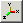

The toolbar provides shortcuts to most of the Menu items, as shown below:
| Button | Menu Item | Description |
|---|---|---|
| File | Open... | Open a CGNS file. A file selection box will be invoked to allow filename selection. | |
| Display | Reset View | Centers and rescales the current graphics view. | |
| Display | Set Defaults... | Invokes a setup panel to allow configuring default volume and surface region behavior and colors. | |
| Display | Two Sided | Enables or disables two-sided lighting. | |
| Display | Backface Culling | Enables or disables back face culling. | |
|  | Display | Display Axis | Enables or disables the display of axes on the edge of the bounding box. |
| Help | CGNSplot... | Invokes the CGNSplot documentation. |